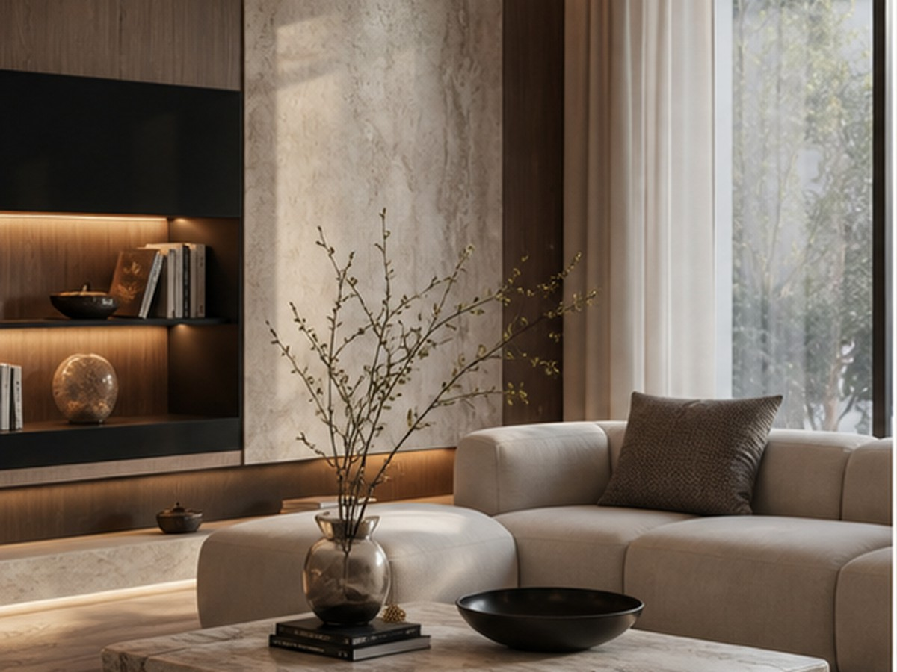
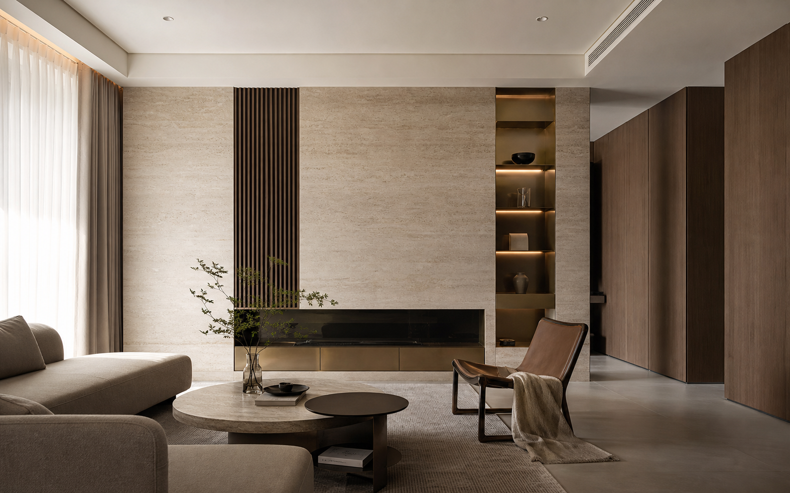
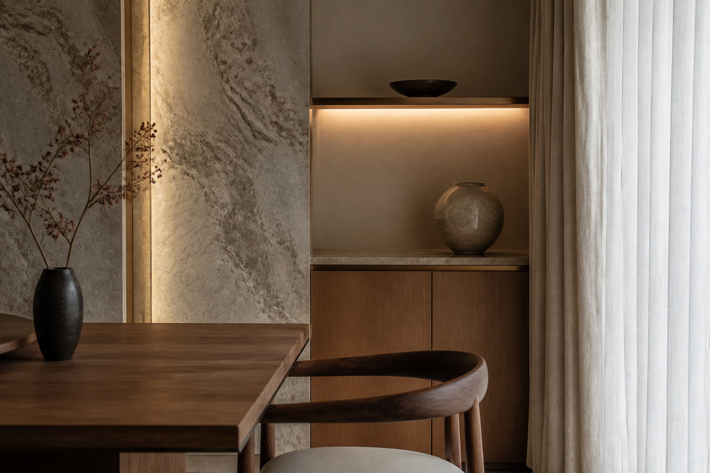

光線與材質
以低彩度石材與溫潤木皮建立主調，搭配間接照明讓公共區域保有沉穩而明亮的表情。

Case 01 / Residence
以石材、木質與柔和光線組成的住宅作品。頁面設計把大圖、材質細節與生活動線拆成清楚節奏，讓訪客快速感受到家的溫度與設計完成度。
Back to WorksProject Story
這個案例頁示範室內設計公司可以如何呈現住宅作品。不是只放照片，而是把設計重點、客戶需求、動線安排與材質選擇整理成可閱讀的故事，讓潛在客戶理解專業價值。
以低彩度石材與溫潤木皮建立主調，搭配間接照明讓公共區域保有沉穩而明亮的表情。
客廳、餐廳與廚房以連續視線串起，讓家庭互動更自然，也讓空間感在手機畫面中仍然清楚。
將展示、收納與立面比例整合，頁面可用重點段落補足照片無法完整說明的設計邏輯。


Next Case